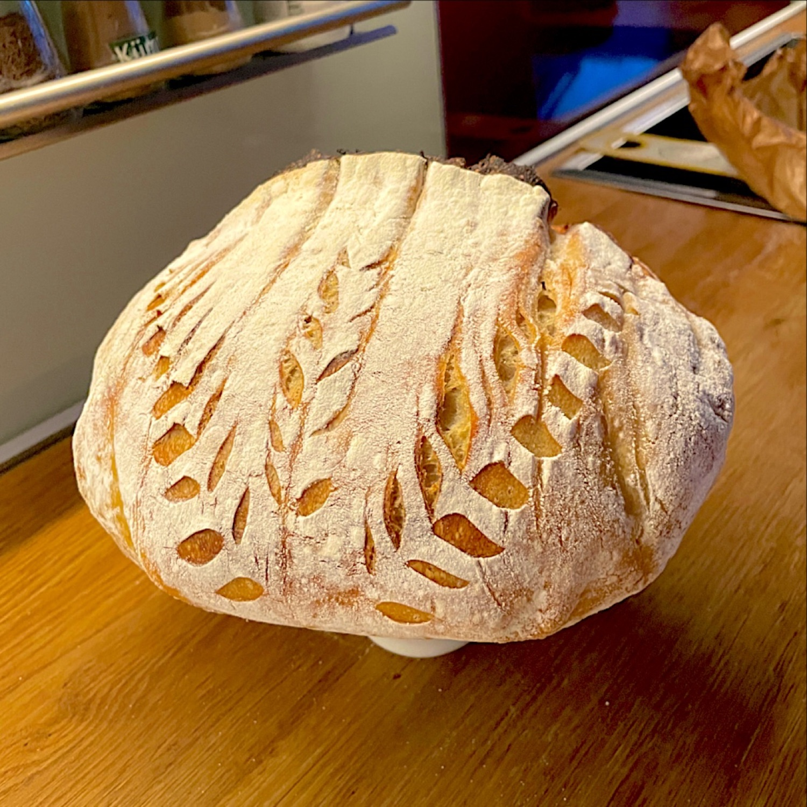
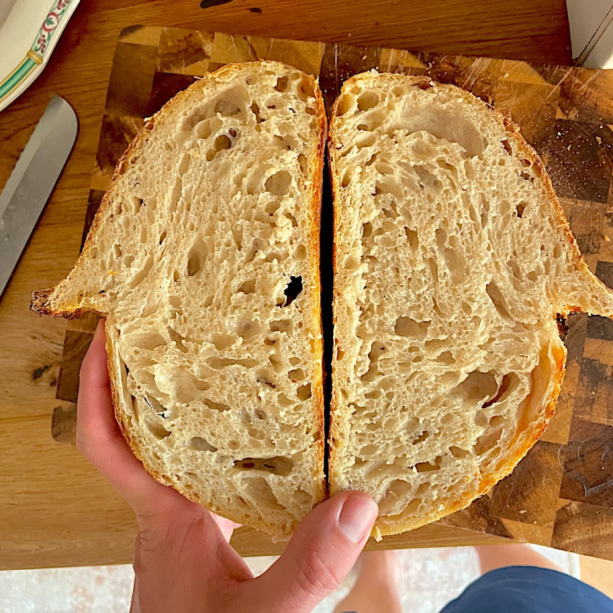

Blog / 5 October 2026
It starts with flour and water: how Sourdough Diary began
January. Decided to make a sourdough starter. It sort of worked. Tried baking with it. Did not work. Tried again. Also no. This went on for an embarrassing number of loaves.
None of my friends bake sourdough, so there was nobody to complain to, let alone ask. So I did what you do: read the entire internet and watched YouTube for hours. Hours.
Two months of only the jar
At some point I quit baking completely and just worked on the starter. For two months. Different feeding ratios, different flours, at one point five jars in the fridge at the same time. Normal behaviour.
My OG starter was called Breadniss. RIP. She was a good one.
March: tried a loaf again. It sort of worked?! At that point "sort of" felt like winning the lottery.

Nobody warned me
Sourdough has SO many details. Nobody prepares you for that. Honestly, if I had known how hard it is without proper guidance, I probably would never have started.
But loaf after loaf it got better, and I started to actually enjoy it. Then I loved it. Talked about it non-stop, made it my whole personality, went down a massive rabbit hole. Still down there. Not really looking for the exit.

A million questions
Eventually my colleague, who is also my best friend at work, wanted to get into baking too. Gave her a bit of my starter and told her how to get going. She was super enthusiastic and started right away.
And obviously she had a million questions. Same as me in January, except she had someone to text. So she did. All the time. And I answered everything, very patiently, thank you.
Then one day I was like: you know what, I'll quickly program an app that walks you through it, so you don't forget anything.
"Quickly." Lol.
Why the jar has opinions
Because sourdough has so much personality. It is fully alive. So obviously it should have loud opinions on everything. Just like me.
Sourdough Diary is basically the guidance I didn't have in January: when the starter is ready, what to do next and for how long, and what went wrong with the last loaf. And giving someone a piece of your starter is in there too, as the family tree.
The best time to start with sourdough would have been with someone to ask. Second best is now, with a jar that talks back.